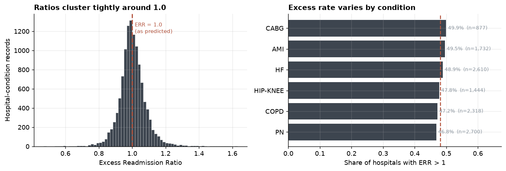
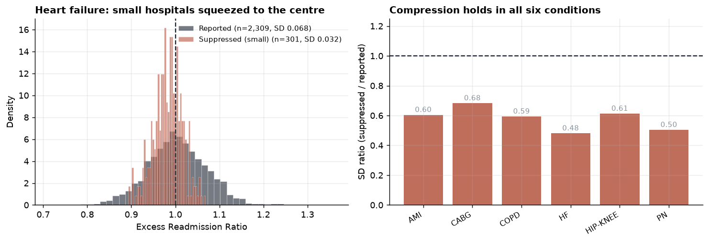
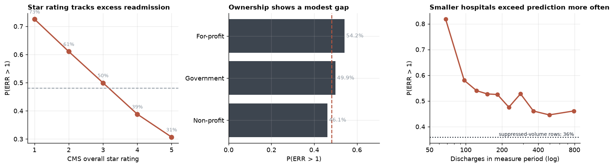
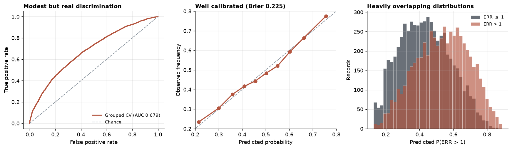

The question
CMS publishes an Excess Readmission Ratio for every eligible hospital and condition. It is already risk-adjusted: age, comorbidities and clinical severity are conditioned out. A ratio above 1.0 means a hospital readmitted more patients than CMS predicted for patients like theirs.
So “which patients get readmitted” is the wrong question here — CMS has already answered it. What remains open is whether the leftover variation says anything about the institution:
After patient case mix is accounted for, do ownership, size, rating and geography still predict excess readmissions?
If the answer is no, the program measures care quality, as designed. If yes, it partly measures what kind of hospital you are — the core of the long-running safety-net critique of the readmissions penalty.

Why one model
The question is inferential, so the coefficients are the result. A single well-specified logistic regression with honest standard errors says more here than a leaderboard of classifiers, and the choices that actually change the answer are not architectural:
Clustered standard errors
A hospital contributes up to six rows — one per condition — so the rows are not independent. Errors are clustered on facility, making the uncertainty reflect 2,818 real hospitals rather than 11,681 pseudo-independent records.
Grouped cross-validation
Folds split by hospital, never by row, so a hospital’s own average cannot leak across the split. Measured rather than assumed: it changed almost nothing here, and the write-up says so.
Informative missingness
Suppressed discharge counts mean low volume, not unknown. Dropping those rows would have silently deleted the small hospitals — precisely the ones the safety-net critique is about.
Binary at a real threshold
The outcome is ratio > 1.0 because that is how the penalty actually works. Magnitude is lost, so a continuous-outcome refit runs alongside as a check; it agrees on direction throughout.
What the model says
Reference cell is heart failure, non-profit ownership, the South, at mean volume and mean star rating. Bars are cluster-robust 95% confidence intervals.
| Predictor | OR | 95% CI | 0.25 · 1.0 · 4.0 | p |
|---|---|---|---|---|
| Condition: Hip/knee replacement | 1.94 | 1.66–2.26 |
|
<10−15 |
| Condition: CABG surgery | 1.57 | 1.32–1.86 |
|
3×10−7 |
| Region: Northeast | 1.22 | 1.06–1.39 |
|
0.005 |
| Ownership: For-profit | 1.15 | 1.02–1.29 |
|
0.023 |
| Condition: Heart attack | 1.08 | 0.95–1.23 |
|
0.229 |
| Ownership: Government | 1.07 | 0.93–1.22 |
|
0.349 |
| Condition: Pneumonia | 0.94 | 0.85–1.04 |
|
0.236 |
| Condition: COPD | 0.92 | 0.81–1.04 |
|
0.163 |
| Region: Midwest | 0.89 | 0.79–0.99 |
|
0.041 |
| Star rating unavailable | 0.85 | 0.63–1.13 |
|
0.260 |
| Has emergency dept | 0.84 | 0.69–1.03 |
|
0.092 |
| Region: West | 0.82 | 0.72–0.92 |
|
9×10−4 |
| Discharge volume (+1 SD) | 0.78 | 0.75–0.82 |
|
<10−15 |
| Star rating (+1 SD) | 0.64 | 0.61–0.67 |
|
<10−15 |
| Volume suppressed (small) | 0.36 | 0.33–0.40 |
|
<10−15 |
Findings
Structure predicts excess readmission, but explains little of it
Grouped-CV AUC 0.679, McFadden pseudo-R² 0.078, and the best available flag is only 1.52× better than picking at random. The effects are real and precisely estimated across 2,818 clustered hospitals, but the great majority of variation in who exceeds prediction is not explained by ownership, size, rating or geography. On the program’s own terms that is mostly reassuring.
The apparent small-hospital advantage belongs to CMS’s estimator, not to hospitals
Hospitals whose discharge counts are suppressed exceed prediction least often of any group — 36% against a 48.1% base, adjusted OR 0.36 [0.33, 0.40]. But their ratio distribution is compressed to half or two-thirds the spread of larger hospitals in every one of the six conditions. CMS fits a hierarchical model that shrinks low-volume hospitals toward a national average sitting just below 1.0, which mechanically parks them on the favourable side of the threshold. Read as a quality result, the coefficient is simply wrong.
Among hospitals large enough to be measured on their own data, smaller is worse
Set the shrinkage group aside and the gradient is clean and monotone: the lowest reported-volume decile exceeds prediction 82% of the time against roughly 46% in the highest, with mean ratio falling steadily from 1.038 to 0.992. Adjusted, each additional standard deviation of log volume carries OR 0.78 [0.75, 0.82]. This is the direction the safety-net critique predicts, and it survives adjustment for condition, ownership, rating and region.
The condition you are judged on matters more than who you are
The two biggest coefficients in the model are condition dummies, not hospital attributes: hip/knee replacement OR 1.94 [1.66, 2.26] and CABG OR 1.57 [1.32, 1.86], both against heart failure. The same institution can clear the bar on one measure and miss it on another. Per-condition refits show the volume effect swinging from OR 0.17 for hip/knee to 0.95 for pneumonia — these six measures are not calibrated to a common scale.
For-profit ownership shows a small but consistent association
OR 1.15 [1.02, 1.29], p = 0.023 — just clearing significance, agreeing in sign with the continuous-outcome check, and positive in five of six per-condition refits. Present and worth reporting; far too small to carry a policy argument on its own.
Star rating moves with readmissions, as it should
OR 0.64 per standard deviation, the most precisely estimated effect in the model, running monotonically from 73% excess among one-star hospitals to 31% among five-star. This is a coherence check on CMS’s measures rather than independent evidence — readmission measures feed into the star rating, so the two cannot be treated as separate.
The shrinkage artifact
The suppressed-volume group broke an otherwise clean gradient, so it needed an explanation before going anywhere near a model.
CMS does not publish a raw readmission rate. It fits a hierarchical model that deliberately shrinks small hospitals’ estimates toward the national average — with few cases, a hospital’s own data is weak evidence, so the model leans on the population. Shrinkage leaves a testable fingerprint: it should compress the variance of the ratio, not merely shift its mean.
It does, in every condition. Ratio of suppressed-group standard deviation to reported-group standard deviation — below 1.0 means compressed:

The pooled comparison points the other way — and that is a trap
Ignore condition, and the suppressed group’s standard deviation (0.087) is higher than the reported group’s (0.078), appearing to refute shrinkage outright.
It doesn’t. Hip/knee replacement has the widest ratio spread of any condition — roughly triple heart failure’s — and 83% of its rows are suppressed, so it dominates the pooled suppressed group and drags its variance up. With suppression rates ranging from 12% to 83% across conditions, the pooled figure compares different mixtures, not different hospitals. Every conclusion here rests on the within-condition comparison.
How the raw patterns look

Does it predict well enough to act on?
Calibration is good — when the model says 60%, close to 60% of those records exceed prediction. That is the property that matters if a number like this ever reaches a human reviewer. Discrimination is another matter: the two outcome classes overlap heavily.
Accuracy is 62.9% at the default 0.5 cut, against 51.9% for always predicting the majority class — roughly eleven points of genuine lift. Balanced accuracy is 62.7%, essentially identical, which rules out any class-imbalance sleight of hand. It is also the least informative number here: accuracy collapses a calibrated probability into one arbitrary threshold and hides the trade-off the sweep below makes explicit.

| Threshold | Flagged | Accuracy | Precision | Recall | Lift |
|---|---|---|---|---|---|
| 0.45 | 6,597 | 62.1% | 59.0% | 69.3% | 1.23× |
| 0.50 | 5,288 | 62.9% | 62.1% | 58.5% | 1.29× |
| 0.55 | 4,088 | 63.0% | 65.8% | 47.9% | 1.37× |
| 0.60 | 2,960 | 61.8% | 69.5% | 36.6% | 1.44× |
| 0.65 | 1,954 | 59.7% | 73.2% | 25.4% | 1.52× |
Why isn’t accuracy higher?
62.9% invites an obvious objection: shouldn’t a good model clear 90%? On this problem, no. A high score here is a symptom rather than an achievement, and three checks establish where the real ceiling sits.
The fastest route to a “great” model
The source file contains Predicted Readmission Rate and Expected Readmission Rate. The excess ratio is their quotient — maximum absolute discrepancy across all 11,681 records is 0.000065. Feed those two columns to any classifier and it scores 99.99%. That is the target handed back in two pieces: a perfect number carrying no information. On this dataset a high accuracy is usually evidence that someone reconstructed the outcome.
The outcome is a residual by construction
CMS has already conditioned out age, comorbidities and clinical severity — everything systematically predictable about which patients bounce back. What survives that subtraction is designed to be noise. A structural model explaining 95% of it would not be a good model; it would be evidence that CMS’s risk adjustment had failed.
A quarter of the records are coin flips
| Distance from 1.0 | Share of records |
|---|---|
| ±0.005 | 6.6% |
| ±0.01 | 13.0% |
| ±0.02 | 25.3% |
| ±0.05 | 57.2% |
The measure’s own standard deviation is 0.082. A hospital at 0.999 and one at 1.001 receive opposite labels while being indistinguishable. No estimator can be right about those, and there are thousands of them.
The empirical ceiling
The decisive test. For each record, predict it using the same hospital’s actual measured performance on its other five conditions — not a proxy like ownership or bed count, but the institution’s own track record, with the record being predicted excluded from its own predictor.
Hospital’s own track record
60.0%
accuracy · AUC 0.637
Structural model
62.9%
accuracy · AUC 0.679
The ceiling belongs to the problem, not the estimator
Knowing exactly how a hospital performed on heart failure, pneumonia, COPD, heart attack and CABG predicts its hip/knee result less accurately than ownership, size, rating and region do. That is the most informative non-leaking feature obtainable, and it underperforms. Swapping logistic regression for a gradient-boosted ensemble cannot move a limit set by the data.
Which is why the deliverable here is a calibrated probability and a set of interpretable odds ratios, not a headline accuracy figure.
What this cannot tell you
- Hospital-level, not patient-level. Nothing here supports a claim about an individual patient’s readmission risk. The unit is an institution–condition pair.
- Cross-sectional and non-causal. One window, overlapping COVID recovery. An odds ratio on ownership describes who exceeds prediction, not what would happen if ownership changed.
- No social risk adjustment. The public file carries no dual-eligible share, disproportionate-share status or area deprivation index. Finding 03 establishes that a volume gradient exists, not that payer mix or poverty is what drives it.
- The shrinkage evidence is inferential. The variance-compression pattern is strongly consistent with hierarchical shrinkage, but CMS’s model is not reproducible from this public file, so the mechanism is evidenced rather than directly verified.
- Star rating is endogenous to the outcome being modelled, and cannot be read as an independent driver.
- The binary outcome discards magnitude. A hospital at 1.001 and one at 1.63 are identical to the logit; the continuous refit agrees on direction.